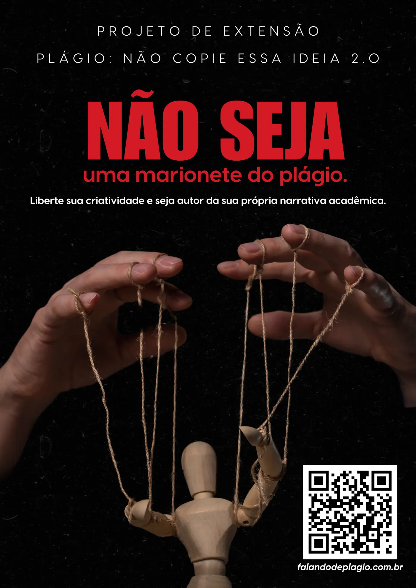
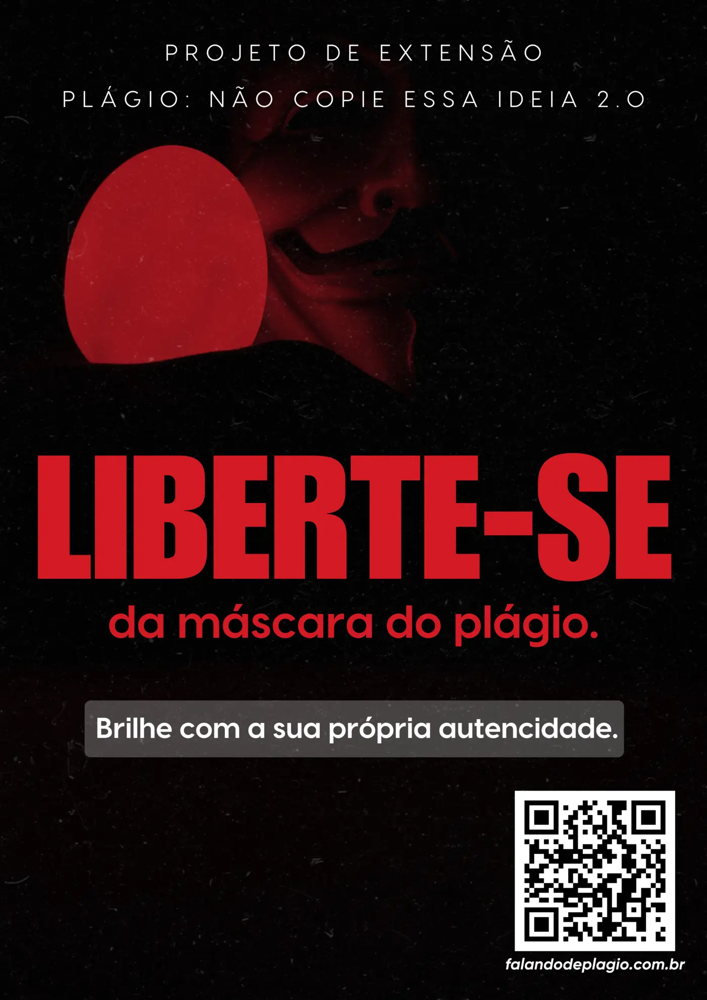
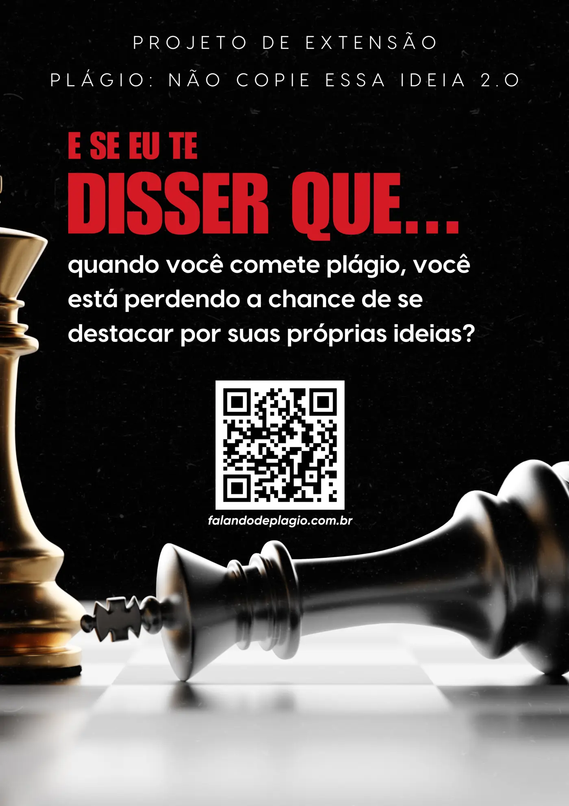

Materiais para compartilhar
Cartazes do acervo do projeto, agora disponíveis diretamente neste site.
Use as peças em ações educativas, salas de aula e canais institucionais. Abra para visualizar em tamanho maior ou faça o download local.






